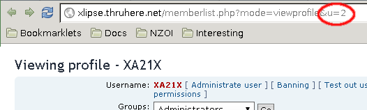

Invisible Admin is a tiny patch that gives a phpBB user admin permissions without anyone noticing.
It does this by overriding phpBB's permission and logging system.
Features
- Make anyone an admin without anyone noticing!
- Disable logging for a certain user (optional)
- Tested on phpBB 3.0.8
Downloads
Make sure you choose the correct version!
- Patch for phpBB 3.0.8
How to use
-
Find out the target user's ID. If you visit their profile page, their ID should be the last part of the URL:

- Download the file below and open it in your favorite text editor. Replace every occurence of
63
with the user ID. - Apply the patch using the patch tool. If you don't know how, this is not for you.
- WIN! That user should see the
Admin Control Panel
link at the bottom of the page.